ภาพอ้างอิงหลักที่ล็อก — ไป๋หลง

ต้นฉบับคัตอินที่ใช้เทียบแนวกรอบ สัดส่วน และฟอนต์
กรอบเหลี่ยมทอง / portrait ซ้าย / ตัวอักษรเอียงเล็กน้อย / เน้นออร่า VFX / ชิดขอบบนซ้าย / ลดขนาดด้วย scale .9
ใช้ภาพต้นฉบับของสี่ตัวโดยไม่แก้ชื่อซ้ำ ตามที่ผู้ใช้ยอมรับสระแตะกรอบเล็กน้อย
ต้นฉบับคัตอินที่ใช้เทียบแนวกรอบ สัดส่วน และฟอนต์
คลิปอัดจากเกมจริง เล่นแอนิเมชันตามเวลาปกติ ภาพนิ่งจับจากเกมหลังคลิกอัลติ แล้วหยุด CSS ที่ 400 ms เพื่อเทียบรายละเอียด ไม่ใช่ภาพจำลองเกมที่ gen
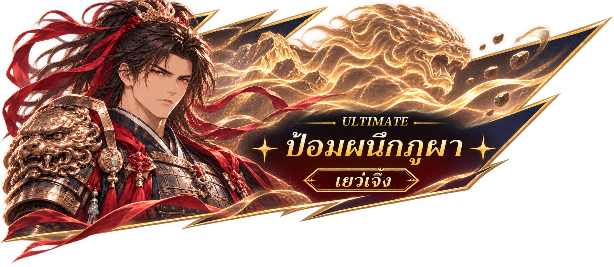

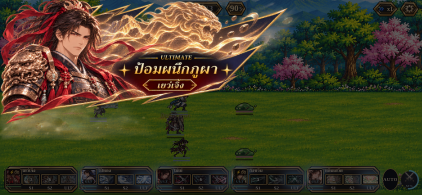
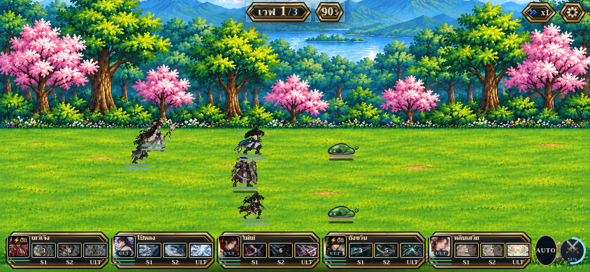
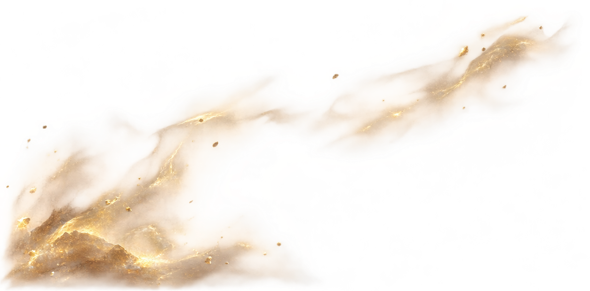
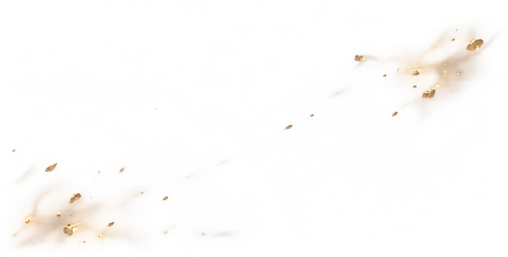
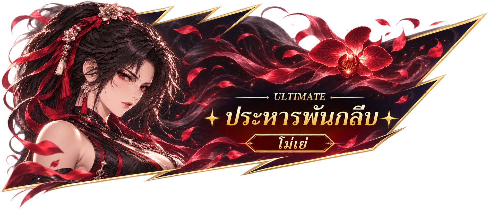


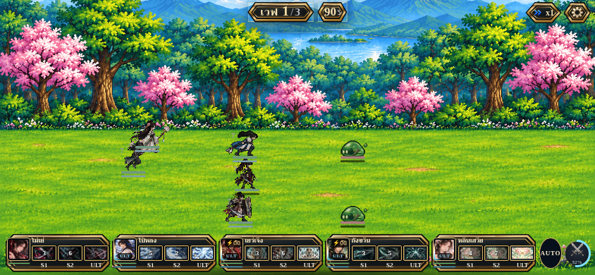
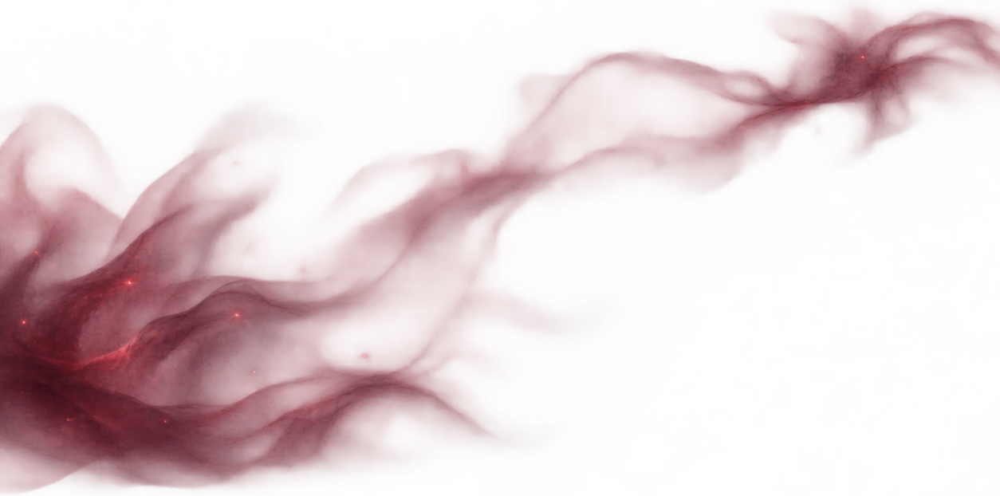
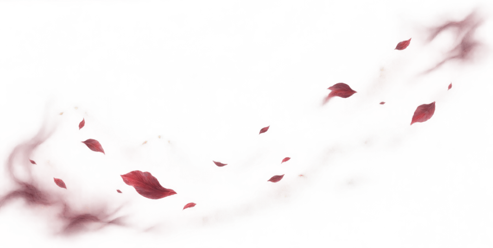
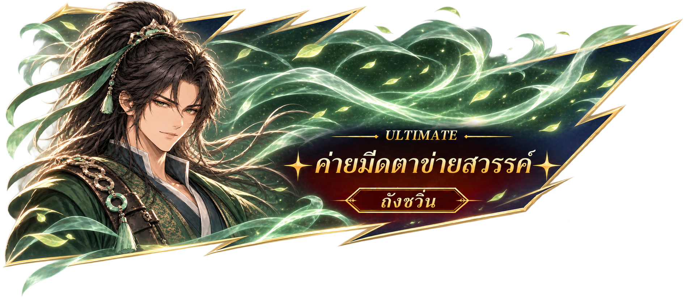
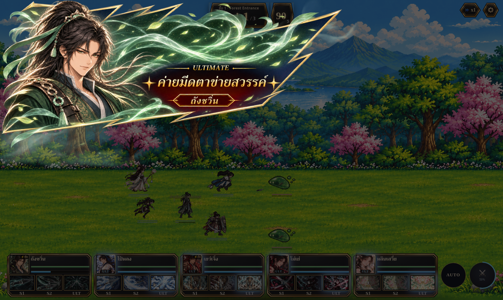

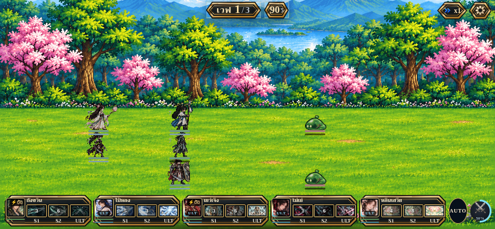
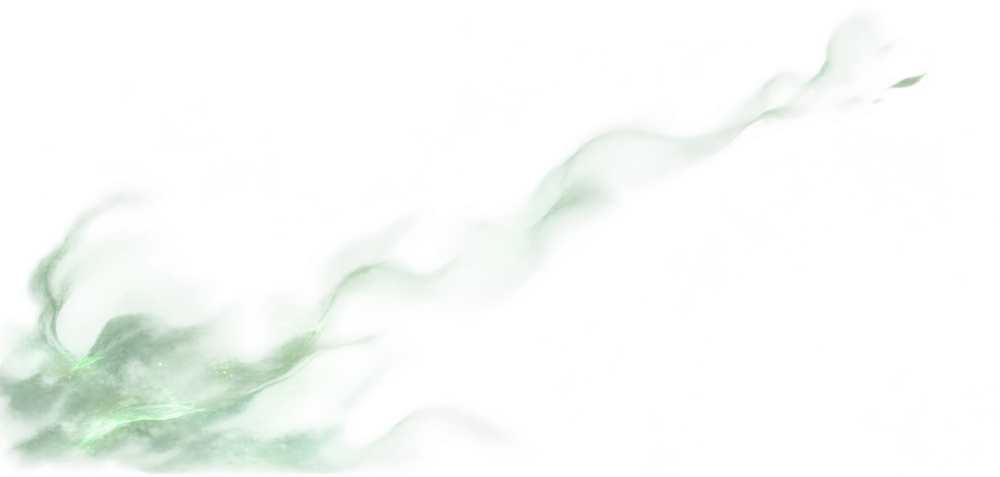
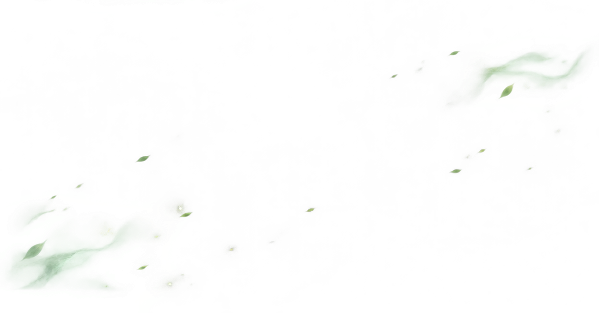
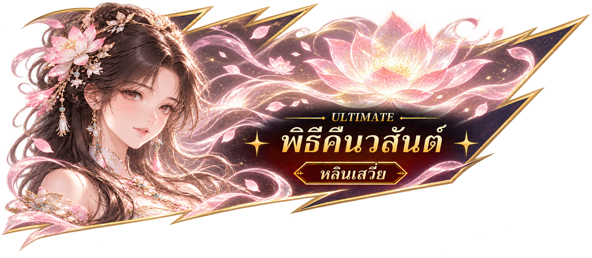
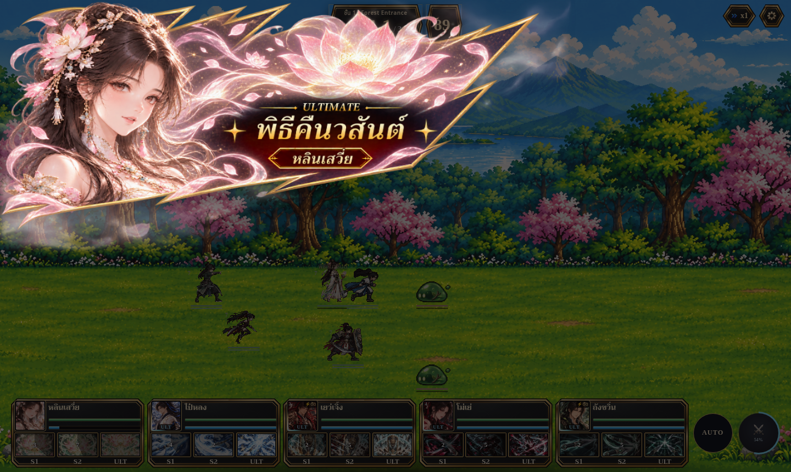
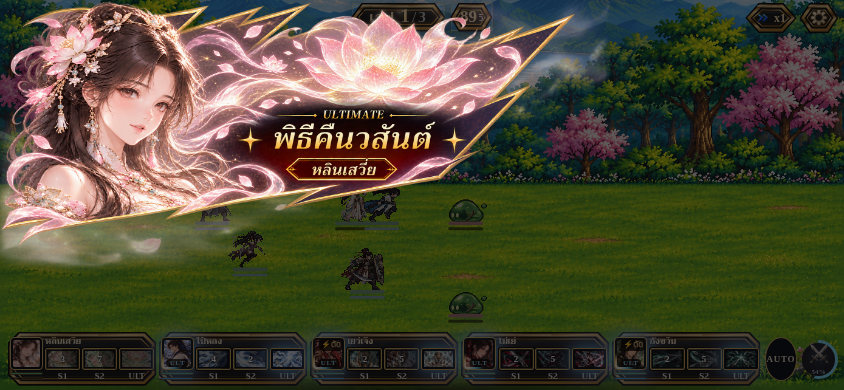
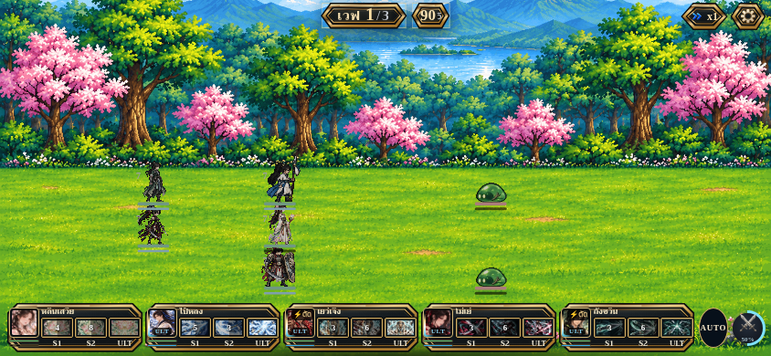
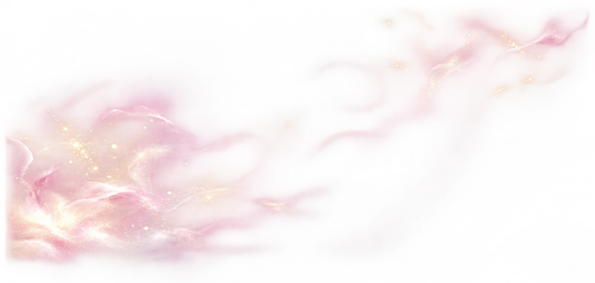
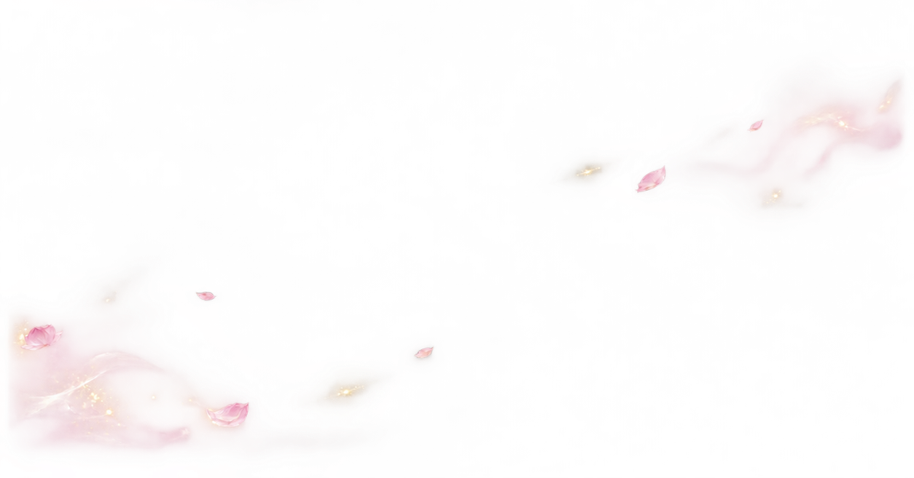